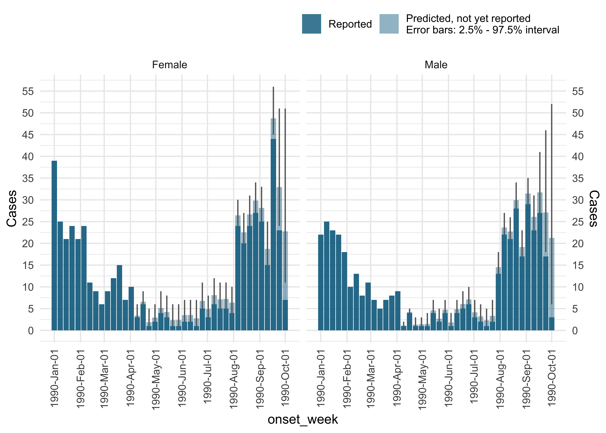

Example
library(diseasenowcasting)
library(ggplot2)
library(dplyr)
library(posterior)
set.seed(32658235)
# Create a fake disease process
num_steps <- 15
num_strata <- 2
num_delays <- 10
sims <- simulate_process_for_testing(num_steps = num_steps,
num_strata = num_strata, num_delays = num_delays)
# Now use model to predict disease process. If no strata is required omit the strata option
predictions <- nowcast(sims, "onset_date", "report_date", strata = ".strata",
method = "variational")
#> Warning: Pareto k diagnostic value is 2.11. Resampling is disabled. Decreasing
#> tol_rel_obj may help if variational algorithm has terminated prematurely.
#> Otherwise consider using sampling instead.
#Get the predicted values in a nice format
predicted_values <- predictions$generated_quantities |>
as_draws() |>
subset_draws("N_predict") |>
summarise_draws() |>
mutate(.strata = as.numeric(stringr::str_remove_all(variable,".*\\[.*,|\\]"))) |>
mutate(.tval = as.numeric(stringr::str_remove_all(variable,".*\\[|,.*\\]"))) |>
left_join(
predictions$data$preprocessed_data |> distinct(.tval, onset_date)
) |>
left_join(
predictions$data$strata_dict
) |>
mutate(.strata = .strata_unified)
# Sum over all delays
data_delays <- sims |>
group_by(onset_date, .strata) |>
summarise(n = sum(n))
# Create plot
ggplot(data_delays) +
geom_ribbon(aes(x = onset_date, ymin = q5, ymax = q95, fill = as.character(.strata)),
data = predicted_values, linetype = "dotted", alpha = 0.5) +
geom_line(aes(x = onset_date, y = n, color = as.character(.strata))) +
geom_line(aes(x = onset_date, y = mean, color = as.character(.strata)),
data = predicted_values, linetype = "dotted") +
theme_bw() +
scale_color_manual("Strata", values = c("tomato3", "forestgreen")) +
scale_fill_manual("Strata", values = c("tomato3", "forestgreen")) +
labs(
x = "Time",
y = "Cases"
)